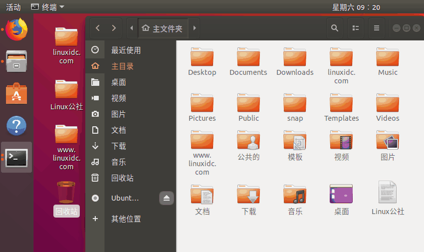

安装ubuntu18
安装Ubuntu 18.04.2
- 说明: Ubuntu 18 的版本只能用VMware-WorkSatation Pro(也就是vm 15) 安装 不然产品不兼容
刚安装完需要做的
更换中文字体
更换中文 需要下载中文字体包, 而说到下载, 就需要联网了,所以先来联网
- 一开始是没有网络的 , 似乎是因为之前上课的实验,虚拟机的网络配置改了, 所以现在连不上网
- 于是只好重置虚拟网路编辑器
- 这步之前先配置网络 ,先看下面的网络配置 , 网络配好后


- 找到简体中文, 勾选 然后确定,就会自动联网安装了
- 然后重启 重启后会弹出来一个选择设置 选择保留之前的名称就大功告成了
网络配置
-
虚拟机-->编辑-->虚拟网络编辑器-->把里面原有的网络都移除了-->还原默认设置
-
配置网络: 网络共享中心-->更改适配器设置-->找到你实体机联网的网络-->右键属性-->共享-->允许...... -->下面的选项就选vm8(因为之前选的是NAT连接)

- 打开命令窗口（右键单机桌面选择Open Terminal或者Ctrl+Alt+T），输入ip a查看自己的网卡编号

- 输入命令
sudo vi /etc/network/interfaces(如果vi出错,或者没有vim可以使用gedit代替vi)，编辑该文件。注意此处eth0处用自己的网卡编号替换，address和gateway也是要视情况定的。

-
然后可以试试ping www.baidu.com 如果还不行就继续
-
在命令行输入
sudo vi /etc/systemd/resolved.conf(如果vi出错,或者没有vim可以使用gedit代替vi) 修改改文件：将DNS前的#号去掉，然后加上通用的DNS服务器地址即可。可以自行上网找，也可以和下面一样配置。

- 重启网络服务：
sudo /etc/init.d/networking force-reload ==> 重新加载网路配置文件
sudo /etc/init.d/networking restart
安装vmtools
虚拟机->> 点击安装vm-tools工具然后看桌面会增加个文件, 双击打开-->把里面的压缩包拖出来-->使用terminal切换到Desktop然后解压 tar -zxvf VMwareTools-10.2.0-7259539.tar.gz -->再使用ls查看,会多一个vmware-tools-distrib文件 --> cd进入-->有一个可执行文件vmware-install.pl -->然后sudo ./vmware-install.pl然后一直回车看见enjoy就说明安装完成了 安装完成后需要reboot重启
设置sudo免密码
注意: 在更改文件之前,最好先拍快照, 或者备份文件
-
在进行sudo操作的时候需要输入当前用户密码，用多了就比较烦，这个东西也可以关掉。输入
sudo nano /etc/sudoers，找到sudo一行，修改为下面的样子。 -
%sudo ALL=(ALL:ALL) NOPASSWD:ALL然后ctrl+x保存
设置
- 再次单击图标可以自动缩小
gsettings set org.gnome.shell.extensions.dash-to-dock click-action 'minimize'

安装搜狗输入法
连接: https://pinyin.sogou.com/linux/
下载64位的 文件名是sogoupinyin_2.2.0.0108_amd64.deb
然后复制到虚拟机中
sudo dpkg -i sogoupinyin.deb *#安装搜狗拼音 sudo apt-get install -f #修复搜狗拼音安装的错误 sudo dpkg -i sogoupinyin.deb *#重新安装搜狗拼音